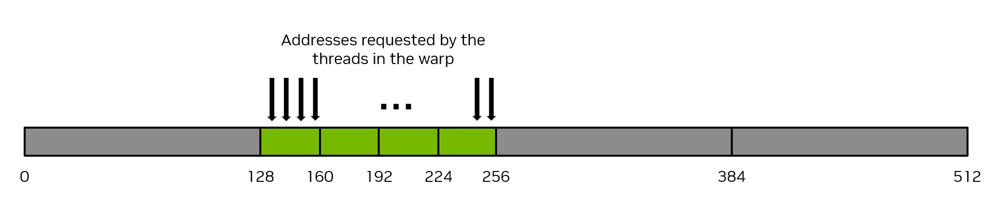
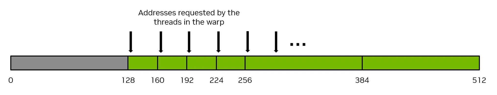
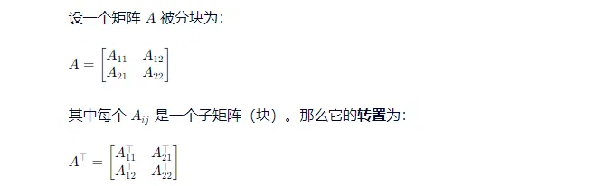
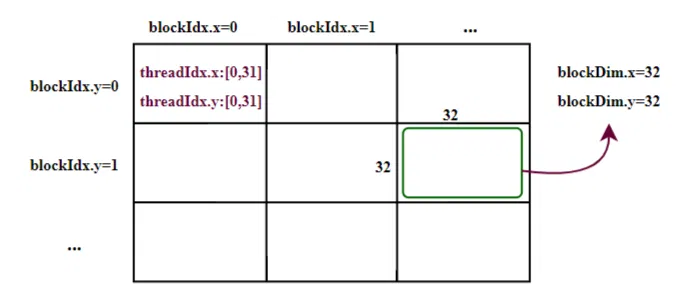
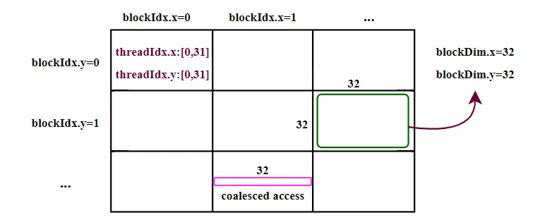
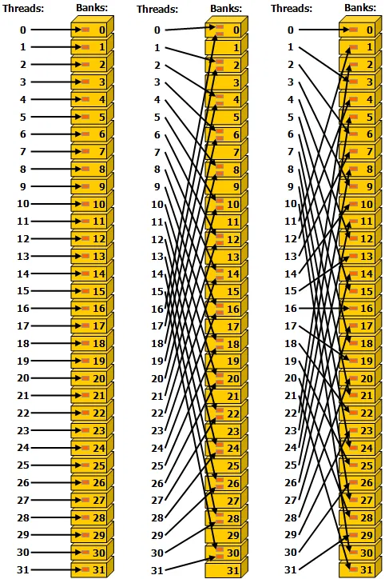
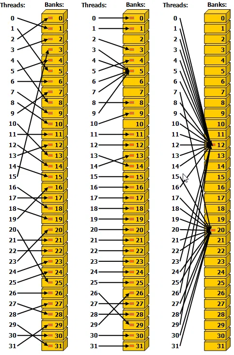
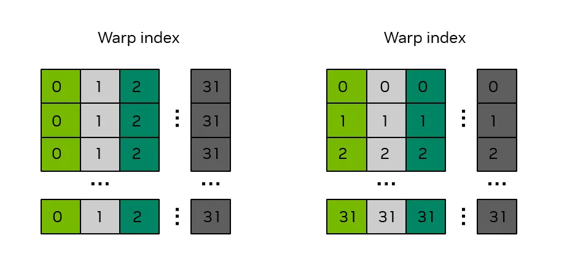
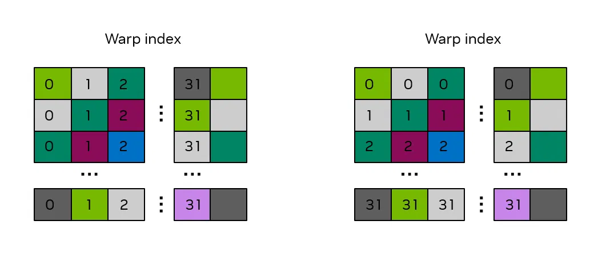

# 前言
本篇介绍 GPU 的内存使用，主要是全局内存的合并内存访问，和共享内存的 bank 冲突。资料来源于 官网 CUDA Programming Guide。本文会比官网教程简洁一些，去掉一些我不太感兴趣的内容（任性）。
作为初学者，错误在所难免，还望不吝赐教。
# GPU 合并内存访问
GPU 的全局内存 Global Memory (GPU Dram, 常见的显卡 8GB、12GB)，是通过 32-byte memory transactions 进行访问的。
当一个 CUDA 线程从全局内存中请求一个数据字节时，相关的 thread warp 会将该 thread warp 中所有线程的内存请求合并成满足该请求所需的内存交易数量，具体数量取决于每个线程访问的数据字节的大小以及内存地址在各线程中的分布情况。
例如，如果一个线程请求一个 4 字节的数据字节，那么该 Thread warp（包含 32 个 Thread）向全局内存发出的实际内存交易总量将是 32 字节。如果同一 warp 的其他 31 个线程并不需要这 32 字节中的数据，那么数据的利用率很低。而如果一个线程从全局内存中请求一个 4 字节的数据字节，并且交易大小为 32 字节，如果该 Thread warp 中的其他线程可以从这个 32 字节的请求中使用其他 4 字节的数据字节，它们可以在同一个请求中获取所需的数据（合并内存访问）。
举一个简单的例子，如果在 warp 请求中连续的线程在内存中请求连续的 4 个字节的数据，那么该 warp 将合并他们的请求，共请求 128 个字节的内存，而这 128 个字节的数据将通过四次 32 字节的内存操作来获取。这就实现了内存系统的 100% 利用率。也就是说，warp 利用了 100% 的内存流量。下图展示了这种完全协同的内存访问示例：

与之相反的，最糟糕的情况是，连续的线程（同一个 warp 中的线程）在同一内存位置上访问的数据元素之间相隔至少 32 个字节。在这种情况下，Thread warp 将被迫为每个线程执行一次 32 字节的内存操作，那么内存传输的总字节数将为 32 字节 * 32 Thread = 1024 字节。然而，实际使用的内存量仅为 128 字节（每个 warp 中的每个线程使用 4 字节），因此内存利用率仅为 128 / 1024 = 12.5%。这是对内存系统的极大浪费。下图展示了这种未合并的内存访问示例：

实现合并内存访问最直接的方法是让连续的线程依次访问内存中的连续元素。
例如，对于使用 1D thread block 启动的 kernal，以下的 VecAdd 内核将实现合并内存访问。
__global__ void vecAdd(float* A, float* B, float* C, int vectorLength) | |
{ | |
int workIndex = threadIdx.x + blockIdx.x*blockDim.x; | |
if(workIndex < vectorLength) | |
{ | |
C[workIndex] = A[workIndex] + B[workIndex]; |
值得注意的是，并不存在这样的规定，即连续的线程必须访问内存中的连续元素才能实现协同式内存访问，这只是实现协同式访问的常见方式而已。只要线程组中的所有线程以某种线性或置换的方式访问来自相同 32 字节内存段的元素，就会发生协同式内存访问。换句话说，实现协同式内存访问的最佳方式是将使用的字节数与传输的字节数的比例最大化。
确保全局内存访问的正确合并是编写高效 CUDA 内核时最重要的性能考量之一。应用程序必须尽可能高效地利用内存系统。
矩阵转置例子 合并内存访问
将一个 N*N 的 float 型外部矩阵，从 A 转置为 C，这个例子使用 2D grid，并假设使用 3232 线程的 2D 线程块，因此 blockDim.x = 32 ， blockDim.y = 32 ，每个线程块要操作 3232 的矩阵切块。每个线程都只对矩阵中的一个特定元素进行处理，因此无需对线程进行显式的同步操作。图 12 展示了这一矩阵转置操作。内核源代码与该图相对应。

每个矩阵顶部和左侧的标签分别是二维线程块的索引，也可以视为分块索引，其中每个小方块代表矩阵中将由二维线程块处理的一个分块。在这个例子中，分块大小为 32 x 32 个元素，因此每个小方块代表矩阵的一个 32 x 32 的分块。绿色阴影方块显示了一个示例分块在转置操作前后的位置。
注分块矩阵转置，块的位置转置（即行列互换）每个块自身也转置。：

此外，提前介绍一下 CUDA C++ 代码中关于线程用到的参数变量：

/* macro to index a 1D memory array with 2D indices in row-major order */ | |
/* ld is the leading dimension, i.e. the number of columns in the matrix */ | |
#define INDX( row, col, ld ) ( ( (row) * (ld) ) + (col) ) | |
/* CUDA kernel for naive matrix transpose */ | |
__global__ void naive_cuda_transpose(int m, float *a, float *c ) | |
{ | |
int myCol = blockDim.x * blockIdx.x + threadIdx.x; | |
int myRow = blockDim.y * blockIdx.y + threadIdx.y; | |
if( myRow < m && myCol < m ){ | |
c[INDX( myCol, myRow, m )] = a[INDX( myRow, myCol, m )]; | |
} /* end if */ | |
return; | |
} /* end naive_cuda_transpose */ |
以上代码：
- 每个 CUDA 线程通过自己的 (blockIdx, threadIdx) 计算出它在逻辑二维网格中的位置 (myRow, myCol)。
- 这个位置直接对应输入矩阵 a 中的一个元素：a [myRow][myCol]。
有对应的位置，线程 (myRow, myCol) 负责读取 a [myRow][myCol]，并将其写入 c [myCol][myRow]
假设位于 global memory 中的待转置矩阵是按照行主序连续存放的（一般都是这样），那么由以上代码可知，取数据阶段，同一 warp 中的 32 个线程所需的数据是连续的，因此可以合并访存，效率很高，如下图所示：

而这 32 个线程在存储结果的时候，相互之间数据间隔超过 32 个字节，无法合并访存，效率很低。
# 共享内存访问
共享内存有 32 个存储单元，其组织方式是：连续的 32 位数据会映射到连续的存储单元上。每个存储单元的带宽为每时钟周期 32 位。
当同一线程 warp 中的多个线程试图访问同一缓存区中的不同元素时，就会发生缓存冲突。在这种情况下，对该缓存区中的数据的访问将被串行化处理，直到所有请求该数据的线程都获取到该数据为止。这种访问的串行化会导致性能下降。
这种情况的两个例外情况发生在同一 warp 中的多个线程同时访问（无论是读取还是写入）同一个共享内存位置时。对于读取操作，数据会被广播给请求的线程。对于写入操作，每个共享内存地址仅由其中的一个线程进行写入（哪个线程执行写入操作是不确定的）。
下图展示了一些分段访问的示例。内存 bank 内的红色方框表示共享内存中的一个特定位置。图中，左边和右边示例都没有访问冲突，但是中间示例有两路访问冲突。

另一个示例，如下图所示：
左图：通过随机排列实现无冲突访问。
中图：由于线程 3、4、6、7 和 9 都访问了同一存储单元中的第 5 个存储器组，所以实现了无冲突访问。
右图：无冲突广播访问（同 warp 内的线程访问同一存储单元）。

# 矩阵转置例子 使用共享内存
在上一个 “使用全局内存的矩阵转置示例” 中，展并未针对全局内存的高效使用进行优化，因为 c 矩阵的写入操作没有得到恰当的合并。在本示例中，共享内存将被视为用户管理的缓存，用于在全局内存中进行加载和存储操作，从而实现矩阵转置例子的读和写操作的全局内存合并访问。
/* definitions of thread block size in X and Y directions */ | |
#define THREADS_PER_BLOCK_X 32 | |
#define THREADS_PER_BLOCK_Y 32 | |
/* macro to index a 1D memory array with 2D indices in column-major order */ | |
/* ld is the leading dimension, i.e. the number of rows in the matrix */ | |
#define INDX( row, col, ld ) ( ( (col) * (ld) ) + (row) ) | |
/* CUDA kernel for shared memory matrix transpose */ | |
__global__ void smem_cuda_transpose(int m, | |
float *a, | |
float *c ) | |
{ | |
/* declare a statically allocated shared memory array */ | |
__shared__ float smemArray[THREADS_PER_BLOCK_X][THREADS_PER_BLOCK_Y]; | |
/* determine my row and column indices for the error checking code */ | |
const int myRow = blockDim.x * blockIdx.x + threadIdx.x; | |
const int myCol = blockDim.y * blockIdx.y + threadIdx.y; | |
/* determine my row tile and column tile index */ | |
const int tileX = blockDim.x * blockIdx.x; | |
const int tileY = blockDim.y * blockIdx.y; | |
if( myRow < m && myCol < m ) | |
{ | |
/* read from global memory into shared memory array */ | |
smemArray[threadIdx.x][threadIdx.y] = a[INDX( tileX + threadIdx.x, tileY + threadIdx.y, m )]; | |
} /* end if */ | |
/* synchronize the threads in the thread block */ | |
__syncthreads(); | |
if( myRow < m && myCol < m ) | |
{ | |
/* write the result from shared memory to global memory */ | |
c[INDX( tileY + threadIdx.x, tileX + threadIdx.y, m )] = smemArray[threadIdx.y][threadIdx.x]; | |
} /* end if */ | |
return; | |
} /* end smem_cuda_transpose */ |
上述代码，第一步 smemArray[threadIdx.x][threadIdx.y] = a[INDX( tileX + threadIdx.x, tileY + threadIdx.y, m )]; 将 global memory 中的数据保存至共享内存中，这个过程已经完成了 Tile 块内的数据转置。读取全局内存的过程中， threadIdx.x 经 INDX( row, col, ld ) ( ( (col) * (ld) ) + (row) ) 映射后，地址连续变化，所以在读取内存中，已经合并内存访问。
第二步 c[INDX( tileY + threadIdx.x, tileX + threadIdx.y, m )] = smemArray[threadIdx.y][threadIdx.x]; ，将共享内存中的数据搬到 global memory 中的指定位置。同样的，在存储过程中， threadIdx.x 连续变化，C [] 地址也连续变化，也实现了合并访存。
这段代码展示了共享内存的两种常见用途。
共享内存用于将数据从全局内存中转移出来，以确保对全局内存的读取和写入操作都能得到正确地合并处理。
共享内存用于使同一线程块中的各个线程能够相互共享数据。
但上述代码存在共享内存的 bank 冲突。
GPU 的 share memory 有 32 个 bank，每个 bank 的 cache line 长度为 4 字节（32bit），并采用低位交叉的地址映射方式。当我们申请 __shared__ float smemArray[32][32] 的共享内存空间时，第一行 32 个 32float 将分散到 32 个 bank 中。
下图中，同样的颜色属于同一 bank，数字代表 warp。比如草绿色这一列全部是 bank0，数字 0 是 warp0.

回到刚才的矩阵砖石例子中，我们可以通过检查共享内存的使用情况来判断是否存在 bank 冲突。共享内存的首次使用情况是将全局内存中的数据存储到共享内存中：
smemArray[threadIdx.x][threadIdx.y] = a[INDX( tileX + threadIdx.x, tileY + threadIdx.y, m )]; |
因为 C++ 数组是按行优先顺序存储的，所以同一 warp 中的连续线程（由连续的 threadIdx.x 值表示），由于 threadIdx.x 是共享内存数组的第一个索引，因此会以 32 个元素的步长访问 smemArray。这会导致 32 路 bank 冲突，如上图 的左图所示。
共享内存的第二种使用方式是将来自共享内存的数据写回全局内存：
c[INDX( tileY + threadIdx.x, tileX + threadIdx.y, m )] = smemArray[threadIdx.y][threadIdx.x]; |
在这种情况下，由于 threadIdx.x 是 smemArray 数组中的第二个索引，同一线程组中的连续线程将以 1 个元素的步长访问 smemArray。这避免了存取冲突，如上图右侧。
如何避免 bank 冲突呢？常见方法是通过在数组的列维度上增加 1 来填充共享内存，具体操作如下：
__shared__ float smemArray[THREADS_PER_BLOCK_X][THREADS_PER_BLOCK_Y+1]; |

这种方式，可使得共享内存存储和读取的时候，都不会有 bank 冲突。
# 后记
本博客目前以及可预期的将来都不会支持评论功能。各位大侠如若有指教和问题，可以在我的 github 项目 或随便一个项目下提出 issue，并指明哪一篇博客，看到一定及时回复！